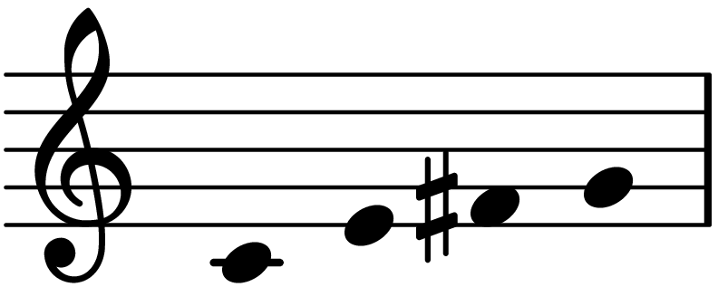

Introduction to Post-Tonal Theory
Chapters 1–2
Joseph N. Straus – 4th Edition
Part 1
Basic Concepts of Pitch and Interval
Octave Equivalence
- Pitches separated by one or more octaves are considered equivalent
- They share the same pitch name
- Foundation of the concept of pitch class
Schoenberg, String quartet no. 4, first movement
Enharmonic Equivalence
- In post-tonal music: B♭ ≡ A♯
- Tonal function is no longer decisive
- Notation is often conventional or graphic
Pitch vs. Pitch Class
- Pitch: specific frequency and register
- Pitch class: abstract collection of equivalent pitches
- Pitch class is register-independent
Six pitches, just one pitch class
Integer Notation
- The 12 pitch classes are represented by integers 0–11
- C = 0, C♯/D♭ = 1, …, B = 11
- “Fixed-do” convention
Modulo 12 Arithmetic
- All operations take place mod 12
- \[x ≡ x ± 12 (mod 12)\]
- Circular pitch-class space (clockface)
Intervals Measured in Semitones
- Intervals are measured in semitones
- Traditional interval names are secondary
- Enharmonically equivalent intervals are identical
| Interval name | Semitones |
|---|---|
| unison | 0 |
| minor 2nd | 1 |
| major 2nd, diminished 3rd | 2 |
| minor 3rd, augmented 2nd | 3 |
| major 3rd, diminished 4th | 4 |
| augmented 3rd, perfect 4th | 5 |
| augmented 4th, diminished 5th | 6 |
| perfect 5th, diminished 6th | 7 |
| augmented 5th, minor 6th | 8 |
| major 6th, diminished 7th | 9 |
| ... | .. |
Pitch Intervals
- Ordered: direction matters (+ / −)
- Unordered: distance only
- Defined in pitch space
Interval Class (ic)
- An unordered pitch-class interval
- Only 7 interval classes: ic0-ic6
- \[interval > 6 → interval(mod(-12))\] complements
| Interval class | Pitch intervals (semitones) |
|---|---|
| 0 | 0, 12, 24 |
| 1 | 1, 11, 13 |
| 2 | 2, 10, 14 |
| 3 | 3, 9, 15 |
| 4 | 4, 8, 16 |
| 5 | 5, 7, 17 |
| 6 | 6, 18 |
Interval-Class Vector
- Compact representation of intervallic content
- Format: [ic1 ic2 ic3 ic4 ic5 ic6]
- Describes the “color” of a collection
Case study
Interval vector?
Spacing and Register
- Same pitch-class set → different sound
- Register affects perception
- Spacing is a compositional parameter
Part 2
Pitch-Class Sets
Pitch-Class Sets
- Unordered collections of pitch classes
- Register, doublings, and order are irrelevant
- Core analytical object in post-tonal theory
Normal Form
- Most compact ordering of a set
- Minimizes total intervallic span
- Standard reference for comparison
Transposition (Tn)
- Uniform shift of all pitch classes
- Tn(x) = x + n (mod 12)
- Preserves intervallic structure
Inversion (In)
- Reflection in pitch-class space
- In(x) = n − x (mod 12)
- Intervals become complements
Set Class
- Collection of sets related by T and I
- Abstract equivalence category
- Independent of transposition and inversion
Prime Form
- Canonical representative of a set class
- Normal form transposed to 0
- Central analytical tool
Segmentation
- Analytical choice of musical units
- Depends on context, gesture, perception
- Never entirely objective